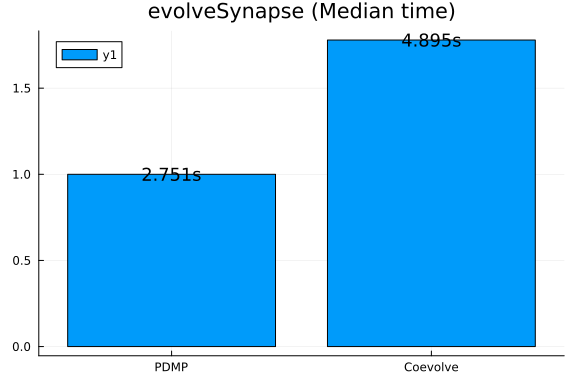
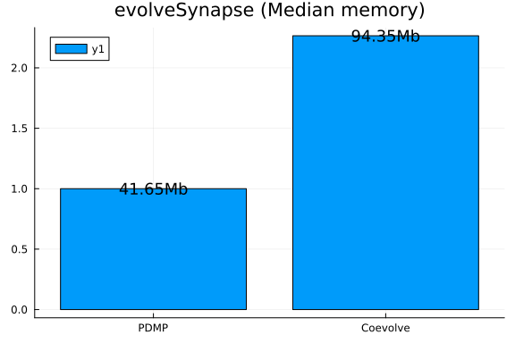

Synapse model
using Synapse
using PiecewiseDeterministicMarkovProcesses, JumpProcesses, OrdinaryDiffEq, Plots
using BenchmarkTools
fmt = :png:pngModel and example solutions
Here we implement the stochastic model of hippocampal synaptic plasticity with geometrical readount of enzyme dinamics from Rodrigues et al. [1].
Parameters and initial conditions
p_synapse = SynapseParams(t_end = 1000.0);
glu = 0.0;
events_sorted_times = [500.0];
is_pre_or_post_event = [true];
events_bap = events_sorted_times[is_pre_or_post_event.==false];
bap_by_epsp = Float64[];
nu = buildTransitionMatrix();xc0 = initial_conditions_continuous_temp(p_synapse);
xd0 = initial_conditions_discrete(p_synapse);Algorithms to benchmark
CoevolveSynced allow us to save at regular intervals. Thus, rather than saving when a jump occurs, we save at the same average frequency as obtained with PDMP.
solver = AutoTsit5(Rosenbrock23());
algorithms = [
(
label = "PDMP",
agg = nothing,
solver = (CHV(solver), CHV(solver)),
saveat = [],
),
(
label = "Coevolve",
agg = Coevolve(),
solver = (solver, solver),
saveat = 1 / p_synapse.sampling_rate,
),
];Example solutions
results = []
for algo in algorithms
push!(
results,
evolveSynapse(
xc0,
xd0,
p_synapse,
events_sorted_times,
is_pre_or_post_event,
bap_by_epsp,
[true],
nu,
algo.solver,
algo.agg;
save_positions = (false, true),
saveat = algo.saveat,
save_everystep = false,
),
)
end1.752197 seconds (83.19 k allocations: 20.114 MiB)
2.592594 seconds (206.16 k allocations: 39.800 MiB, 4.97% gc time)fig = plot(xlabel = "Voltage", ylabel = "Time");
for (i, algo) in enumerate(algorithms)
res = results[i]
plot!(res.t, res.Vsp, label = algo.label)
end
title!("Vsp")
fig = plot(xlabel = "N", ylabel = "Time");
for (i, algo) in enumerate(algorithms)
res = results[i]
plot!(res.t, res.XD[1, :], label = algo.label)
end
title!("2line-Go, AMPA")
Benchmarking perfomance
bs = Vector{BenchmarkTools.Trial}()
for algo in algorithms
push!(
bs,
@benchmark(
evolveSynapse(
xc0,
xd0,
p_synapse,
events_sorted_times,
is_pre_or_post_event,
bap_by_epsp,
[true],
nu,
$(algo).solver,
$(algo).agg;
save_positions = (false, true),
saveat = $(algo).saveat,
save_everystep = false,
),
samples = 50,
evals = 1,
seconds = 500,
)
)
end1.920312 seconds (91.39 k allocations: 22.298 MiB)
1.777722 seconds (84.69 k allocations: 20.587 MiB)
1.732228 seconds (82.22 k allocations: 19.888 MiB)
1.797556 seconds (84.34 k allocations: 20.280 MiB)
1.580937 seconds (76.41 k allocations: 18.898 MiB)
1.681221 seconds (80.12 k allocations: 18.821 MiB)
1.596548 seconds (76.92 k allocations: 18.303 MiB)
1.491859 seconds (73.40 k allocations: 18.337 MiB)
1.659034 seconds (78.66 k allocations: 18.522 MiB)
1.592783 seconds (78.16 k allocations: 19.668 MiB)
1.519852 seconds (73.66 k allocations: 17.593 MiB)
1.802103 seconds (84.50 k allocations: 19.601 MiB)
1.685646 seconds (80.93 k allocations: 19.802 MiB)
1.569136 seconds (75.00 k allocations: 17.597 MiB)
1.541260 seconds (73.78 k allocations: 17.294 MiB)
1.496324 seconds (73.42 k allocations: 18.381 MiB)
1.554781 seconds (74.53 k allocations: 17.638 MiB)
1.353970 seconds (66.93 k allocations: 16.217 MiB)
1.161315 seconds (58.82 k allocations: 14.337 MiB)
1.420855 seconds (69.07 k allocations: 16.518 MiB)
1.422035 seconds (70.39 k allocations: 17.792 MiB)
1.813527 seconds (86.31 k allocations: 21.057 MiB)
1.412556 seconds (69.22 k allocations: 16.637 MiB)
1.842774 seconds (86.48 k allocations: 19.980 MiB)
1.496493 seconds (72.11 k allocations: 16.990 MiB)
1.468570 seconds (71.37 k allocations: 17.042 MiB)
1.706756 seconds (80.66 k allocations: 18.797 MiB)
1.252664 seconds (62.37 k allocations: 15.107 MiB)
1.791741 seconds (82.58 k allocations: 20.103 MiB, 3.14% gc time)
1.371469 seconds (67.24 k allocations: 16.159 MiB)
1.503042 seconds (73.03 k allocations: 17.403 MiB)
1.616457 seconds (78.05 k allocations: 19.212 MiB)
1.508771 seconds (73.23 k allocations: 17.567 MiB)
1.425240 seconds (68.42 k allocations: 16.077 MiB)
1.551965 seconds (75.01 k allocations: 17.741 MiB)
1.447663 seconds (70.63 k allocations: 16.872 MiB)
1.471721 seconds (70.95 k allocations: 16.747 MiB)
1.578028 seconds (75.84 k allocations: 17.928 MiB)
1.444950 seconds (69.24 k allocations: 16.169 MiB)
1.446069 seconds (69.26 k allocations: 16.210 MiB)
1.468291 seconds (72.15 k allocations: 18.047 MiB)
1.322205 seconds (65.56 k allocations: 15.857 MiB)
1.540576 seconds (74.43 k allocations: 17.688 MiB)
1.526924 seconds (75.94 k allocations: 19.420 MiB)
1.355725 seconds (66.18 k allocations: 15.765 MiB)
1.701425 seconds (80.54 k allocations: 20.029 MiB, 2.48% gc time)
1.379791 seconds (66.80 k allocations: 15.743 MiB)
1.628650 seconds (77.63 k allocations: 18.199 MiB)
1.555712 seconds (75.02 k allocations: 17.818 MiB)
1.552654 seconds (74.67 k allocations: 17.667 MiB)
1.439698 seconds (71.43 k allocations: 18.137 MiB)
2.660428 seconds (224.58 k allocations: 42.975 MiB)
2.434448 seconds (203.75 k allocations: 39.417 MiB)
2.516652 seconds (209.66 k allocations: 40.504 MiB)
2.590599 seconds (217.00 k allocations: 42.139 MiB, 2.28% gc time)
2.589649 seconds (225.47 k allocations: 43.581 MiB)
2.545721 seconds (212.22 k allocations: 40.935 MiB)
2.501623 seconds (211.81 k allocations: 40.784 MiB)
2.450929 seconds (209.75 k allocations: 40.319 MiB)
2.646452 seconds (224.59 k allocations: 43.552 MiB)
2.474547 seconds (212.06 k allocations: 40.719 MiB)
2.480001 seconds (209.09 k allocations: 40.279 MiB)
2.422441 seconds (207.62 k allocations: 40.450 MiB, 1.59% gc time)
2.472373 seconds (205.58 k allocations: 39.802 MiB)
2.484825 seconds (207.05 k allocations: 40.017 MiB)
2.455366 seconds (211.65 k allocations: 40.630 MiB)
2.610446 seconds (229.99 k allocations: 44.249 MiB)
2.687965 seconds (220.23 k allocations: 42.219 MiB, 2.53% gc time)
2.472290 seconds (206.25 k allocations: 39.894 MiB)
2.342054 seconds (198.97 k allocations: 38.502 MiB)
2.420923 seconds (198.71 k allocations: 38.525 MiB, 2.04% gc time)
2.468954 seconds (203.99 k allocations: 39.545 MiB)
2.503505 seconds (215.74 k allocations: 41.932 MiB)
2.424058 seconds (202.67 k allocations: 39.255 MiB)
2.650696 seconds (227.60 k allocations: 44.040 MiB)
2.723781 seconds (228.79 k allocations: 44.247 MiB, 1.77% gc time)
2.319974 seconds (193.56 k allocations: 37.636 MiB)
2.521131 seconds (212.83 k allocations: 40.965 MiB)
2.487553 seconds (207.63 k allocations: 40.011 MiB, 1.74% gc time)
2.608883 seconds (217.97 k allocations: 41.906 MiB)
2.392152 seconds (201.65 k allocations: 38.989 MiB)
2.482578 seconds (213.47 k allocations: 40.964 MiB)
2.442069 seconds (207.10 k allocations: 39.917 MiB)
2.615963 seconds (214.25 k allocations: 41.257 MiB, 2.22% gc time)
2.440737 seconds (203.26 k allocations: 39.370 MiB)
2.360221 seconds (194.33 k allocations: 37.861 MiB)
2.589534 seconds (223.97 k allocations: 43.369 MiB)
2.584262 seconds (224.74 k allocations: 43.416 MiB)
2.378555 seconds (203.00 k allocations: 39.143 MiB)
2.447000 seconds (213.09 k allocations: 41.438 MiB)
2.402597 seconds (199.92 k allocations: 38.794 MiB)
2.514050 seconds (210.64 k allocations: 40.511 MiB, 1.79% gc time)
2.515307 seconds (217.78 k allocations: 42.263 MiB)
2.412185 seconds (207.70 k allocations: 39.910 MiB)
2.481011 seconds (219.07 k allocations: 42.378 MiB)
2.456012 seconds (211.20 k allocations: 40.546 MiB)
2.488041 seconds (211.87 k allocations: 40.700 MiB)
2.428857 seconds (204.46 k allocations: 39.495 MiB)
2.490686 seconds (213.19 k allocations: 40.942 MiB)
2.528742 seconds (206.65 k allocations: 39.980 MiB, 1.64% gc time)
2.520927 seconds (213.27 k allocations: 41.009 MiB)
2.498835 seconds (217.46 k allocations: 42.123 MiB)labels = [a.label for a in algorithms]
medtimes = [text(string(round(median(b).time/1e9, digits=3),"s"), :center, 12) for b in bs]
relmedtimes = [median(b).time for b in bs]
relmedtimes ./= relmedtimes[1]
bar(labels, relmedtimes, markeralpha=0, series_annotation=medtimes, fmt=fmt)
title!("evolveSynapse (Median time)")
medmem = [text(string(round(median(b).memory/1e6, digits=3),"Mb"), :center, 12) for b in bs]
relmedmem = Float64[median(b).memory for b in bs]
relmedmem ./= relmedmem[1]
bar(labels, relmedmem, markeralpha=0, series_annotation=medmem, fmt=fmt)
title!("evolveSynapse (Median memory)")
References
[1] Y. E. Rodrigues, C. M. Tigaret, H. Marie, C. O’Donnell, and R. Veltz, "A stochastic model of hippocampal synaptic plasticity with geometrical readout of enzyme dynamics." bioRxiv, p. 2021.03.30.437703, Mar. 30, 2021. doi: 10.1101/2021.03.30.437703.